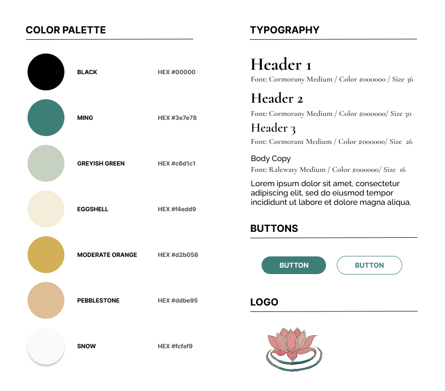
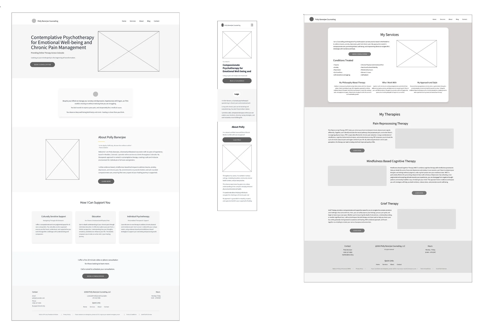
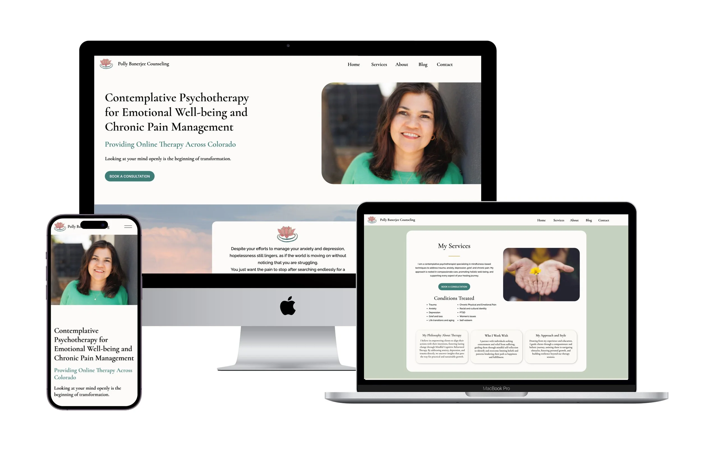

Case Study · 03 · Healthcare
Polly Banerjee had 25 years of experience as a licensed counselor and a website that was working against her. Visitors could not find what they needed, the booking process had unnecessary friction, and the design did not communicate the warmth of her practice. Two weeks later the site launched, and consultation bookings increased 55% in the following six months.
Fig 01. Final homepage design across mobile and desktop
01
The Challenge
Polly Banerjee is a licensed professional counselor with over 25 years of experience, specializing in contemplative psychotherapy and chronic pain management. Her practice is built around a specific therapeutic approach. Her original website did not communicate any of that clearly.
Visitors could not navigate her services or understand her specializations. There was no prominent call to action for booking a consultation. The booking process itself had too many steps. For someone already considering therapy, which takes courage, a confusing website is often the reason they do not follow through.
The brief was a full site redesign: establish trust from the first visit, communicate her approach clearly, and remove every unnecessary barrier between a potential client and a first conversation with Polly.
"The website feels welcoming and safe." — new client, post-launch
02
Research & Discovery
I used Claude.ai to run a competitive analysis across 8 counseling practice websites in Colorado, synthesizing patterns in visual design, navigation structure, and booking experience. The audit was faster than a manual review and gave me a cleaner picture of what the category was getting wrong.
Three problems showed up consistently across all eight sites.
Finding 01
Most therapy websites felt impersonal. Color palettes were either too cold or too chaotic. There was little use of authentic imagery or personal narrative. Sites that should have felt safe felt transactional instead.
Finding 02
Therapeutic approaches and specializations were hard to find. Insurance information was missing or buried. Users who were already anxious faced complex navigation at the worst possible moment.
Finding 03
Multi-step booking flows created friction for vulnerable users who were already uncertain about reaching out. Clear calls to action for initial consultations were absent or easy to miss.
All three were also problems on Polly's existing site. The competitive analysis confirmed the problem and gave clear direction for what to fix.
8 Colorado therapy websites audited
4 of 8
No direct CTA to request a consultation
7 of 8
Contact information buried in navigation
6 of 8
Bright, overwhelming color palette
6 of 8
Therapist specializations not described
5 of 8
Credentials and licenses not listed
6 of 8
Insurance accepted not shown
Fig 02. Competitive audit across 8 counseling practice websites in Colorado
03
Design Strategy
The visual direction came directly from the nature of Polly's practice. Contemplative psychotherapy asks clients to slow down and be present. The site needed to feel the same way: unhurried, warm, grounded.
Visual Direction
Soft sage green and warm beige for the palette. Clean, readable typography that felt approachable rather than clinical. Natural landscape photography alongside Polly's professional photo. A lotus flower logo to reflect her contemplative approach and her clients' work toward growth.
Information Architecture
Home for immediate connection, Services to communicate what she offers, About to build trust through her story and credentials, Blog to demonstrate expertise, Contact as the direct path to booking. Every page had a job and nothing extra.

Fig 03. Visual design system: palette, type, and imagery decisions
I interviewed Polly to understand how she talks about her work and what her clients respond to. I drafted the service descriptions based on those conversations, then used Claude.ai to refine tone and ensure the copy was findable in search for her specific specializations: contemplative psychotherapy, chronic pain counseling, and therapy in Colorado.
The goal was content that sounded like her and could be found by someone searching for exactly what she offers. SEO and authenticity are not at odds when the research is right.
04
Design Execution
The homepage was the most important surface to get right. A potential client landing there for the first time is often in a vulnerable state. The design needed to answer three questions quickly: who is this person, what do they do, and how do I talk to them.
Homepage
Polly's photo and a clear explanation of her contemplative approach above the fold. A prominent Book a Consultation CTA with a free 20-minute offer to reduce the hesitation that stops people from reaching out. The booking button appears more than once on the page.
Services
Conditions and therapy types organized in a scannable format with visual cards for each approach. Users who did not know exactly what they needed could find a way in. Users who knew what they were looking for could find it without reading everything.
About
Personal narrative about Polly's background and qualifications, with credentials displayed prominently. Trust for a therapist comes from both who they are and what they have trained to do. The page addressed both.

Fig 04. Wireframes across homepage, services, and about page
I ran informal usability testing with 8 participants who were unfamiliar with the site. Each session focused on three things: locating specific therapy information, understanding the services offered, and completing the booking process.
The most impactful finding had nothing to do with visual design. Enough participants could not find the booking CTA without scrolling that it needed to move. That single change, putting the consultation button higher on the homepage, was the most direct driver of what happened to bookings after launch.
Other refinements from testing: added office hours to the footer, clarified that sessions are virtual only, and included an emergency resources disclaimer, which is an ethical standard for mental health sites and something several participants noted was absent.

Fig 05. Final high-fidelity designs across homepage, services, and mobile
05
Outcomes
Results tracked through Google Analytics and Polly's own client reporting at the six-month mark. The consultation booking increase was the primary goal. The session duration and bounce rate data confirmed that the people who did land on the site were finding what they came for.
New Client
This was the baseline goal for the redesign. A mental health website needs to feel safe before it can do anything else.
Site Visitor
The original site buried this. Three of the eight usability testing participants could not explain Polly's specialization after reading the homepage. That number went to zero in post-launch feedback.
New Client
This is the outcome that mattered most. For this audience, friction in the booking process is a real barrier to getting help. That shaped every decision about how many steps the process had and where the CTA appeared.
Reflection
Moving the booking CTA higher on the homepage was not in the original design brief. It came from watching 8 people use the site. Without that testing session, the button would have stayed where I had placed it, and those 55% more bookings would have been harder to reach.
Designing for a mental health audience also sharpened how I think about friction. Every extra click, every confusing label, every thing that requires effort from someone already uncertain about reaching out is a real cost. That standard belongs on any site where the stakes of not reaching the user are high.
What I would do differently: run testing earlier, before high-fidelity designs were built. The refinements from 8 participants were meaningful, but getting that signal at the wireframe stage would have saved time and given me more room to iterate on the things that moved behavior.